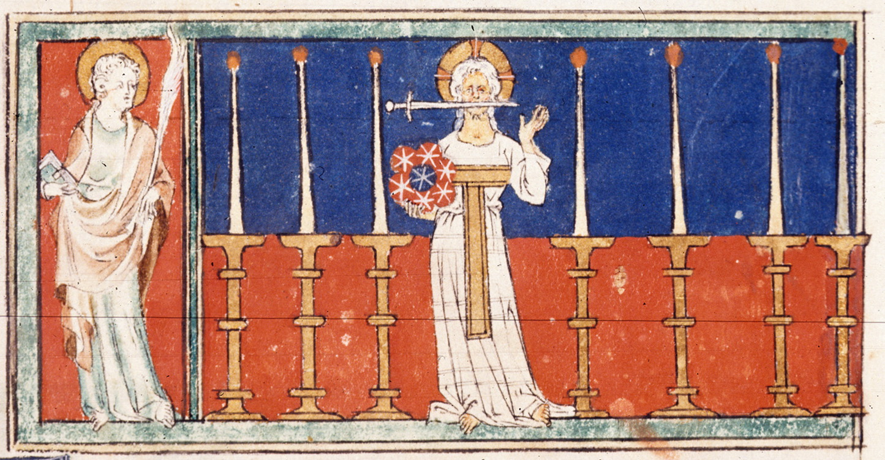

A campaign in and around Dolmenwood
Status: Active
The game runs seasonally from September to May. This season will run from September 2026 to May 2027.
Sessions occur every other week on a rotating time schedule as follows: Week 1 is Sunday Late, Week 2 is Sunday Early. Sunday Late sessions start at 19:00 CEST (Vienna, Austria), while Sunday Early sessions start at 05:00 CEST (Vienna, Austria).
All sessions run 3 hours or less. We will not pause in mid-combat.
Quorum: DM plus three players.
Mode: Play is virtual, with the link to the Foundry VTT having been provided.
Coordination: Discord, westmarches.games
This is a multi-party West Marches style game. Players will sign up for an upcoming session on the provided westmarches.game plaftorm (maximum 6 players) and keep their expeditions limited to the session. All PCs must exit any dungeon they are in by the end of the session. Only PCs who participate in an expedition gain XP for that expedition.
House Rules contains the more specific rules in effect for the campaign.
You will have been provided with a link to a selection of materials from my TTRPG Library. These will include the Dolmenwood Player's Book (DPB), player maps as appropriate, and character sheets. Below are some additional (unofficial) reference material.
Dolmenwood Book of Hours is an unofficial list of holidays and festivals inspired by the Dolmenwood calendar.
On the Menu: What's for Dinner in Dolmenwood is a procedural generator for establishment menus.
In Memoriam is where we pay tribute to fallen comrades.